Music generation aims to create music segments that align with human aesthetics based on diverse conditional information. Despite advancements in generating music from specific textual descriptions (e.g., style, genre, instruments), the practical application of these models is hindered by ordinary users' limited expertise or time to write accurate prompts. To bridge this application gap, this paper introduces MusFlow, a novel multimodal music generation model using Conditional Flow Matching. We employ multiple Multi-Layer Perceptrons (MLPs) to align multimodal conditional information into the CLAP embedding space of audio. Conditional flow matching is trained to reconstruct the compressed Mel-spectrogram in the pretrained VAE latent space guided by aligned feature embedding. MusFlow can generate music from images, story texts, and music captions. To collect data for model training, inspired by multi-agent collaboration, we construct an intelligent data annotation workflow centered around a fine-tuned Qwen2-VL model. Using this workflow, we build a new multimodal music dataset, MMusSet, with each sample containing a quadruple of image, story text, music caption, and music piece. We conduct four sets of experiments: image-to-music, story-to-music, caption-to-music, and multimodal music generation. Experimental results demonstrate that MusFlow can generate high-quality music pieces whether the input conditions are unimodal or multimodal. We hope this work can advance the application of music generation in multimedia field, making music creation more accessible.
| Image | Story | Caption | Music |
|---|---|---|---|
| 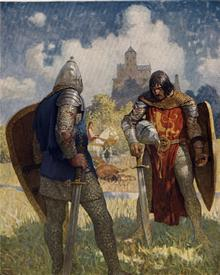 | There are two men dressed in armor standing in a field with a castle in the background, one holding a sword and the other holding a shield and shield | The music is a medieval battle theme with a strong emphasis on the clash of swords. The tempo is slow and steady, with a deep bass drum rhythm and a melodic string section. The music is intense and dramatic, evoking a sense of courage and determination. | |
| 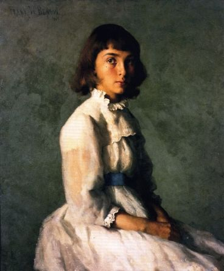 | Painting of a woman in a white dress sitting on a chair with her hand on her knee and looking off to the side, wearing a white collared shirt and blue ribbon around her neck | The music is a classical piece with a melancholic and emotional tone. The instruments used are a piano and a violin, playing a slow and expressive melody. The music is rich and emotional, with a sense of longing and sadness. | |
| 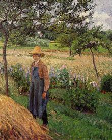 | There is a painting of a man standing in a field next to a pile of hay with a horse in the background and a tree in the foreground | The music is instrumental, featuring a harmonious blend of acoustic guitar, harmonica, and fiddle. The tempo is slow, with a melancholic and nostalgic tone, evoking a sense of longing and reflection. The music is accompanied by the sound of birds chirping and the rustling of leaves, creating a serene and peaceful atmosphere. | |
| 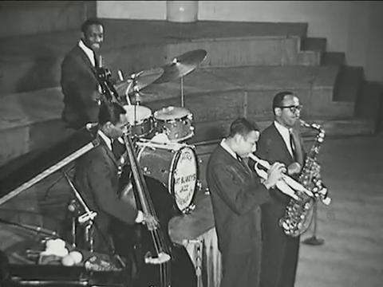 | Black and white photo of a group of men in suits playing musical instruments in a room with a piano, keyboard, microphone, and other musical instruments. | The music track in question belongs to the jazz genre, exuding a vibrant and dynamic mix of emotions, blending joy and a subtle touch of melancholy. The composition typically features a brass section, saxophones, and a rhythm section, including drums and double bass, with the saxophone often leading the melody. | |
| 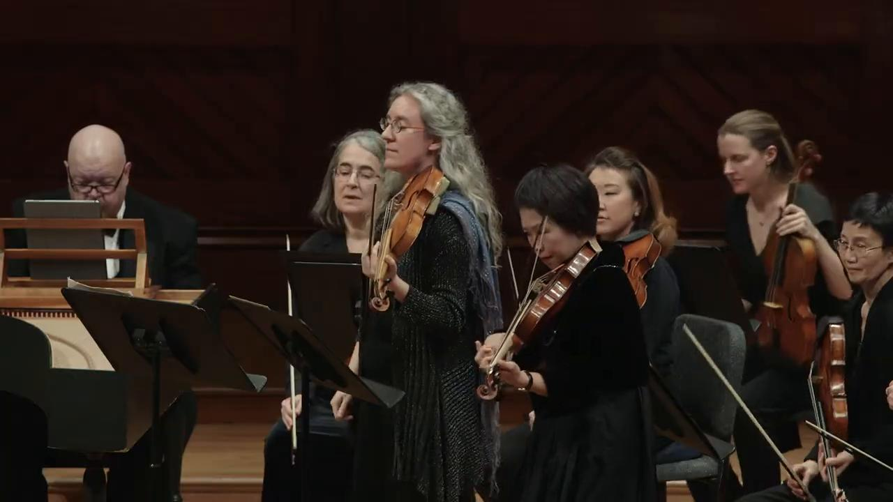 | There is a group of people that are playing music together in a concert with one woman holding a violin and the other woman holding a violin in their hand. | This concerto is characterized by its energetic and intricate nature, with four solo violins engaging in lively dialogues and harmonious passages. Set against a backdrop of a string orchestra, it serves as a showcase for virtuosity and technical prowess. | |
| 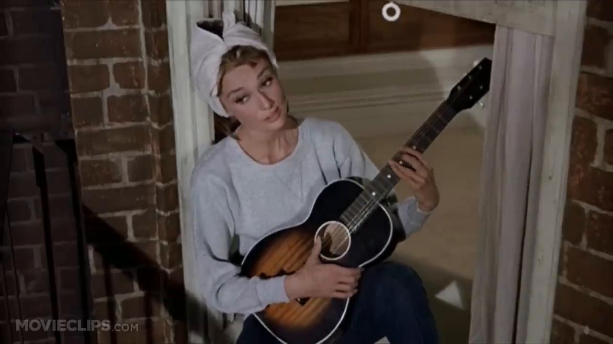 | There is a woman that is holding a guitar in her hand and wearing a hat on top of her head sitting on the steps of a door way. | The song belongs to the Adult Standards genre and exudes a sense of nostalgia and tranquility. It is typically composed with instruments such as the piano, strings like the violin and cello, and occasionally a gentle flute, creating a delicate and ethereal musical landscape. The song often explores themes of yearning, longing, and a sense of timeless beauty. |
| Caption Input | Generated Music |
|---|---|
| The music features a piano playing a melancholic melody, accompanied by a soft drum beat, a bass guitar playing a simple tune, and a harmonica playing a sad tune. The atmosphere is somber and melancholic, with a sense of longing and sadness. | |
| The music is classical, with a majestic and grandiose atmosphere. The instruments include trumpets, violins, and a piano, playing a harmonious melody that evokes a sense of awe and reverence. The music is rich in texture and depth, with the instruments playing in unison to create a cohesive and powerful composition. | |
| This music track belongs to the pop genre and evokes feelings of joy and positivity. It incorporates a lively combination of instruments, starting with a dynamic rhythm section featuring drums and bass, accompanied by infectious keyboard melodies and a spirited horn section. | |
| The track is a fusion of Hip-Hop and R&B, emanating confidence and assertiveness, embodying an energetic and empowering vibe. The composition incorporates rhythmic beats, basslines, synthesizers, and electronic elements, creating a dynamic musical arrangement. The central theme centers around empowerment, self-confidence, and embracing individuality, encouraging listeners to assert themselves and break free from societal expectations. |
| Story Input | Generated Music |
|---|---|
| An oil painting of a field of bluebonnets with trees in the foreground and a river running through the middle of the field to the far side. | |
| There is a drawing of a woman sitting in a bath tub with a glass of wine in her hand and a cigarette in her mouth. | |
| This is an old black and white photo of a man and a woman singing together in front of a man playing a guitar and a woman holding a violin. | |
| There is a young man that is playing a piano in the street at night with the lights of the city in the window behind him and a red light in the background. |
| Image Input | Generated Music |
|---|---|
| 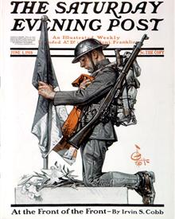 | |
| 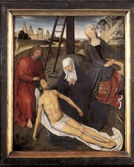 | |
| 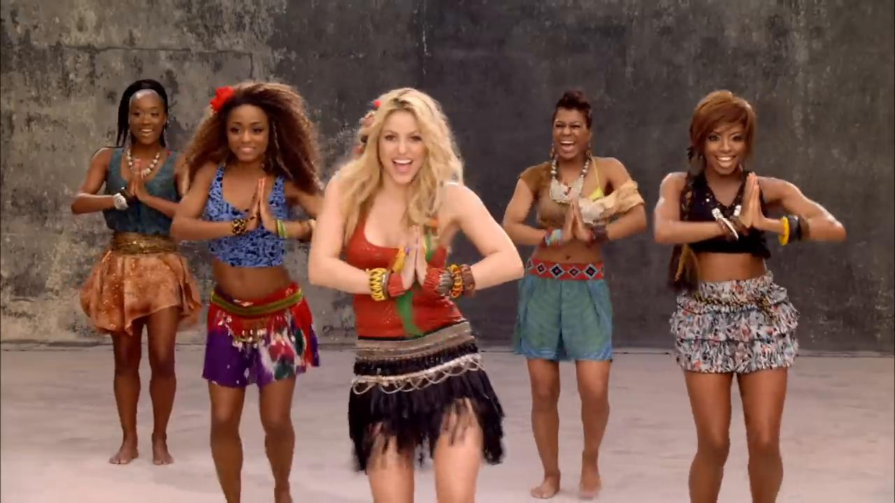 |
| Image Input | Caption Input | Story Input | Generated Music |
|---|---|---|---|
| 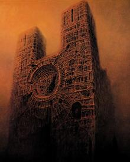 | The music is a mix of ambient and electronic elements, with a focus on synthesizers and electronic instruments. The tempo is slow and steady, creating a sense of calm and introspection. The music is ethereal and otherworldly, with a sense of mystery and wonder. The overall atmosphere is serene and meditative, with a sense of tranquility and peace. | There is a painting of a large building with a clock on it's face in the middle of a foggy city at sunset time, with a red sky in the background. | |
| 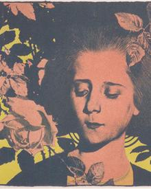 | The music is a mellow instrumental with a soft and soothing melody played by a flute and a gentle rhythm played by a piano. The music is slow, soft, and calming, with a gentle and soothing melody that is soothing and calming. The music is perfect for relaxation, meditation, and yoga. | There is a picture of a woman with a flower in her hair and a butterfly in her hair on a black and yellow background with a yellow border. | |
| The music is a mellow, soothing, and calming instrumental piece with a serene and peaceful atmosphere. The music features a harmonious blend of various instruments, including a piano, flute, and strings, playing in a gentle and melodic manner. The tempo is slow and steady, creating a sense of tranquility and relaxation. The music is perfect for meditation, yoga, or any other activity that requires a calm and soothing atmosphere. | painting of cows grazing in a field with a thatched house in the background and trees in the foreground, with a cloudy sky in the background. | ||
| 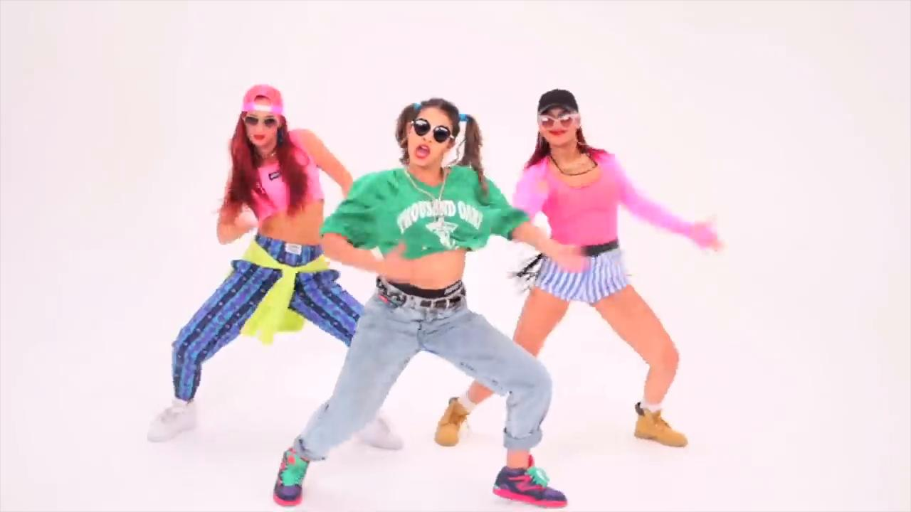 | The music vedio "Sorry" is dance-pop song. It has a melancholy, atoning tone and conveys a sense of remorse and apology. It combines tropical and electronic components to provide a positive but highly charged environment.The song's tropical and danceable mood is aided by the usage of electronic beats, synthesizers, and vocal harmonies, as well as a distinctive steel drum-like sound. | There are three women that are dancing together in a dance pose on a white background and one woman is wearing a pink shirt and the other is wearing a green shirt and blue jeans. | |
| 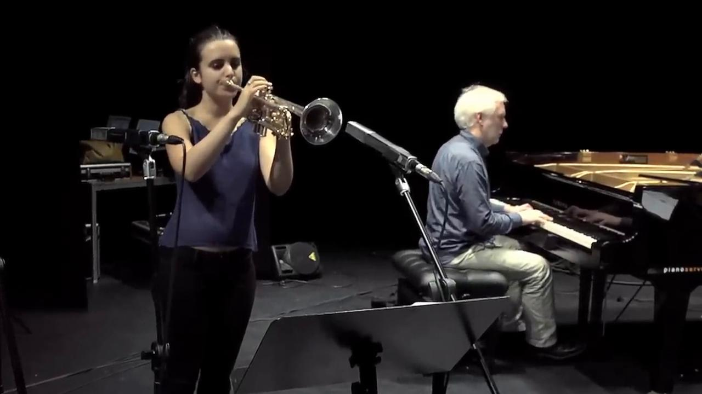 | The track in question is a lively Bossa Nova composition that evokes a joyful and celebratory atmosphere. It typically features classical guitar, often played with intricate fingerpicking, and soft, melodic vocals that convey the joy of dancing samba. The central theme of the song revolves around the celebration of samba, inviting people to come together and dance. | There is a woman that is playing a trumpet in front of a man who is sitting and playing a piano. | |
| The music track from "The Fairly OddParents" falls into the category of whimsical and cheerful children's music. It exudes feelings of lightheartedness and fun, creating an atmosphere of joy and playfulness. The composition features a variety of instruments, including xylophones, flutes, and playful percussion, creating a sequence that reflects the show's quirky and magical theme. | There is a cartoon picture of a man and a woman standing in front of a mirror with their hands in the air and pointing at each other way. |